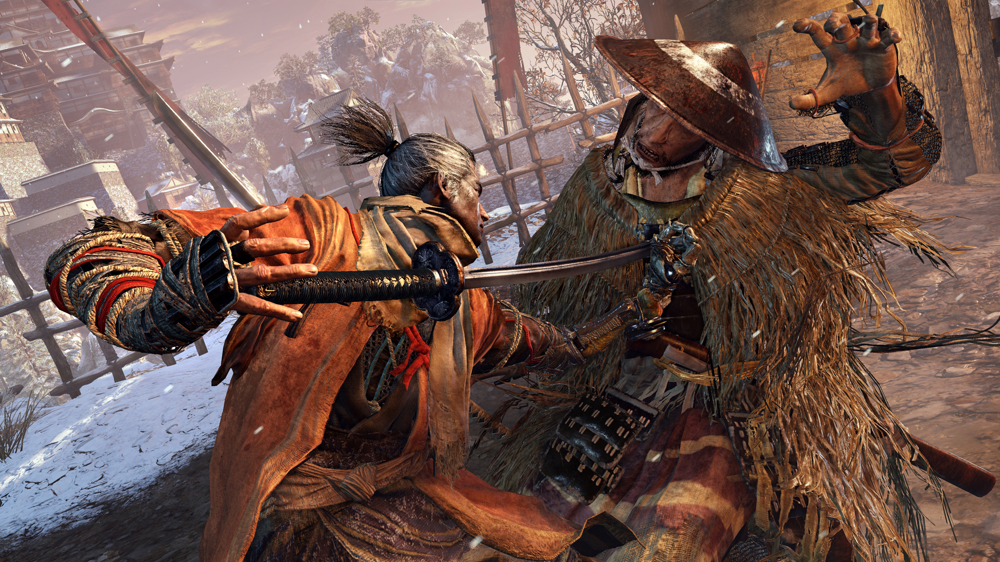

Within the first minutes of Sekiro: Shadows Die Twice, there’s no missing the fact that FromSoftware has built its Shinobi-focused adventure from the DNA of the Souls and Bloodborne series. But this new mutated strain is as much its own stealth-action experience, one that’s more focused, cohesive, and in some ways forgiving, despite retaining its predecessors' trademark difficulty. As I rolled credits after 50 hours of pressurized-blood-geyser executions, fantastical monster fights, split-second swordsmanship, and sprawling, secret-filled areas, I’m left with a deep appreciation for this amazing journey and the skills it demands to master it. To any Souls veteran, Sekiro’s timing-based lock-on combat of strikes and slashes is familiar, as is the way you weave through the same excellently designed levels that snake, interconnect, and double back on themselves to reveal new shortcuts between little bastions of safety to resupply. Functionally equivalent to bonfires from Dark Souls, or Lanterns in Bloodborne, the Sculptor’s Idols are where you’ll rest, recover your healing draughts, reset slain enemies, access your character progression, and of course, teleport between them for a snappy fast travel.
While I certainly enjoy punishing games that test me and my skills (and have proudly bested everything FromSoftware has thrown at me in this genre) there’s a sense of empowerment that comes from Sekiro’s generally more forgiving nature. For example, due to the seemingly smaller, more linear paths relative to the sprawling hellscapes of other FromSoftware games, I never felt like I had to go too far to find the next Idol and bank my progress. That regular cadence relieves a lot of the oppressive anxiety in wondering if all your work will be taken from you before you can make it to the next checkpoint, and once or twice I simply sprinted through an area, assuming an Idol was just on the other side. It usually was. That relieving sense of safety in Sekiro allowed me to appreciate the mechanical complexities of it in a way I couldn’t if I was terrified of taking any chances. It’s not something I’d wish for every game of this genre to embrace, but it’s refreshing and new.
Though many of the mechanics and level design philosophies of this mystical take on Japan’s Sengoku period (between 1467 and 1615) are nearly identical to the formula laid out previously, Sekiro is immediately its own beast when it comes to stealth, combat, and movement thanks to a Swiss-army-knife of a prosthetic arm strapped to your titular Shinobi character. Its most apparent trick is a built-in grappling hook that can send you flying to the rooftops at a whim, which sends ripples throughout the gameplay. Where all previous Soulsborne characters felt rooted firmly to the ground as they trudged down hallways and slowly climbed ladders, Sekiro’s level design has permission to be much more vertical. Between jumping and zip-lining between anchors, that sense that you’re only ever a dead end away from being cornered, overwhelmed, and murdered in some dark alcove is an almost non-existent concern. When I got into trouble, there was almost always a way out if I thought like a ninja instead of a knight.
That same feeling extends to sneaking and battling through the mist-covered forests of the Ashina Depths, and the sheer frozen cliff faces of the Sunken Valley, that make up a small part of the journey through Sekiro. With this freedom, complex environments like these take on an almost platformer-like carefree fun rather than the familiar sense of imposing dread that these places are yet another obstacle in your way. Sure, they’re still loaded with things that want to kill you, but your liberating movement helps to expose the world as a place that isn’t maliciously adding to the pain of getting from one point to the next.
Sekiro evolves From Software’s formula into a stylish stealth-action adventure that, naturally, emphasizes precision and skill in its combat. It walks the line between deliberate and patient stealth and breakneck melee combat against threats both earthly and otherworldly. Its imaginative and flexible tools support a more focused experience that shaves down some of From Software’s overly cryptic sensibilities without losing its air of mystery. Sekiro is an amazing new twist on a familiar set of ideas that can stand on its own alongside its predecessors.
Comment Here